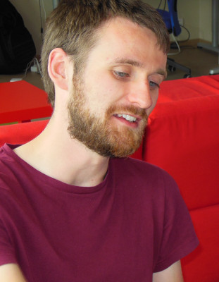

I am an assistant professor at the University of Luxembourg.
You can reach me at pieter.belmans@uni.lu.
Some interactive mathematics:
- {% include icon-fanography.html %}
- {% include icon-grassmannian.html %}
- {% include icon-hyperkaehler.html %}
- {% include icon-superficie.html %}
Latest blogposts
{% for post in site.posts limit:7 %}
- {{ post.date | date: "%b %d, %Y" }} {{ post.title }}{% if post.draft %} (draft){% endif %}
{% endfor %}
Conference organisation
- Stacks Project Workshop 2, Ann Arbor, summer 2023
- Fano varieties and hyperkähler varieties, Strasbourg, January 9–11 2023
- Noncommutative shapes, Antwerp, September 12–16 2022
- GROW@Bonn, Bonn, March 31–April 2, 2022
- Noncommutative shapes: halfway event, Antwerp, September 20, 2021
- Felix Klein lectures by Markus Reineke: Quiver moduli and applications, online, October 20–29, 2020
- Stacks Project Online GEometry Event, online, August 3–7, 2020
- Stacks Project Workshop, Ann Arbor, July 31–August 4, 2017
- Non-commutative, derived and homotopical methods in geometry, Antwerp, September 19–24, 2016